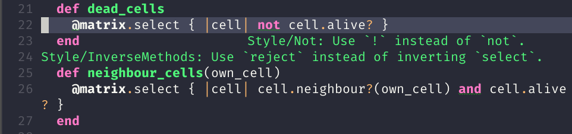

Living inside Emacs

whoami
- Eduardo Jorge
- Masters Student
- Interested in Category Theory, InfoSec, Functional Programming
Confession
Ex vim fanboy

Table of contents
Emacs vs (neo)vi(m)
Emacs VS (neo)vi(m)
As a text editor
- Vim is a text editor
- Emacs HAS a text editor
As an IDE
- In Vim your OS is the IDE
- In Emacs your IDE is the OS
Emacs overview
Emacs overview
History
- Started at MIT in 1972
- Based on TECO
- Richard Stallman added macro features 1976
- Stallman wrote the first Emacs (Editor MACRoS)
More than a text editor
Framework to create IDEs
- Extensible
- Small core written in C
- Everything else is ELisp
Packages
- Small Lisp programs
- Implement additional features
Some notation
- Buffers
- Windows
- Frames
Some notation
Modes
Major modes
- Each buffer has a major mode
- Each major mode customizes Emac's behavior
Minor modes
- Each buffer has many minor modes
- Minor modes extend functionalities
Unix philosophy and workflow
Unix philosophy
Do one thing and do it well
Workflow
- Vim
- Open as needed
- Emacs
- Open it once and never close it
Emacs as an IDE
Text Navigation
- Move a char forward
- <C-f>
- Move a word forward
- <M-f>
- Move up
- <C-p>
- Move down
- <C-d>
- Go to the end of the buffer
- <M-<>
What you actually do
- Search
- <C-s> or <C-r>
- End of line
- <C-e>
- Beginning of line
- <C-a>
- Kill word
- <M-d>
- Expand region
- Increases the selected region by semantic units
Expand region
(use-package expand-region
:ensure t)
(global-set-key (kbd "C-+") 'er/expand-region)
Screw it use vim
Screw it emulate vim
Evil mode
Major programming modes
- Indentation
- Syntax highlight
- Integration with tools
- Organize imports
- ruby-mode, haskell-mode, go-mode, js2-mode
Config
(use-package go-mode :ensure t)
Syntax checking with Flycheck
Config
(use-package flycheck
:ensure t
:diminish
:init (global-flycheck-mode))
Code completion with Company
Config
(use-package company
:ensure t
:diminish company-mode
:hook (prog-mode . company-mode)
:config
(with-eval-after-load 'company
(define-key company-active-map (kbd "C-n") 'company-select-next)
(define-key company-active-map (kbd "C-p") 'company-select-previous)))
Bring it all together with LSP
- Language Server Protocol
- Text editor or IDE
- "Smartness provider"
Features
- Auto complete
- Goto definition
- Find all references
- Other IDE stuff
Features
Config
(use-package lsp-mode
:init (setq lsp-keymap-prefix "s-l")
:hook (XXX-mode . lsp)
:commands lsp)
Documentation
(use-package lsp-ui
:ensure t
:commands lsp-ui-mode)
Documentation
Debugger
(use-package dap-mode
:after lsp-mode
:config
(dap-mode t)
(dap-ui-mode t))
(use-package dap-XXX)
Integrate with company
(use-package company-lsp :commands company-lsp)

Code snippets
(use-package yasnippet
:ensure t
:diminish yas-minor-mode
:init (yas-global-mode 1))
(use-package yasnippet-snippets
:ensure t
:diminish)
Projectile
- Operate on a project level
- Find project files
- Find tests
- Toggle between files with different extensions
(use-package projectile
:ensure t
:diminish
:config
(define-key projectile-mode-map (kbd "C-c p") 'projectile-command-map)
(projectile-mode +1))
Magit
Why
- Same keybindings
- Same text render and highlight when coding
- Can interact with git without leaving the buffer (git blame)
How it works
- Top level actions
- Sub-actions
- Modifiers
Example
TRAMP
- Transparent Remote (file) Access, Multiple Protocol
- Works over FTP, SSH, etc
Emacs as an IDE
Org mode
Org mode
Your life in plain text
Purpose
A fast and effective plain-text system for
- Keeping notes
- Maintaining TODO lists
- Planning projects
- Authoring documents
Note taking
Text
* Dependable Distributed Systems
** Class 1
* Única forma de tolerar (...)
* Réplicas de componentes (...)
* Comunicação em grupo tem (...)
*** Faults, Errors, and Failures
Falta :: defeito
Result
TODO s
Text
#+TODO: TODO IN-PROGRESS HELD-BLOCKED HELD-FROZEN REVIEW DONE
* Todo
** DONE Criar org file com datas
** TODO Fazer slides
DEADLINE: <2020-02-24 seg>
:LOGBOOK:
CLOCK: [2020-02-24 seg 01:34]--[2020-02-24 seg 01:35] => 0:01
:END:
** HELD-FROZEN Ficha(s) Analise
DEADLINE: <2020-02-24 seg>
Result
Agenda
Dashboard
Presentations with revealjs
(defun herulume/publish-talk (message)
"Save current org file and publish it as a revealjs talk"
(interactive "sCommit message: ")
(save-buffer)
(org-reveal-export-to-html)
(magit-stage-modified)
(magit-call-git "commit" "-m" message)
(magit-call-git "push" "origin"))
Ledger and finances
- For every debit there is at least one credit
- All debits and credits in the same transaction, must sum to zero
Terminology
- Account
- A label describing an amount of something
- Credit
- The addition of value to an account
- Debit
- The deduction of value from an account
- Transaction
- A collection of credits and debits with a timestamp
Five common categories of accounts
- Assets
- Bank accounts, wallet
- Income
- paychecks, gifts, interest
- Expenses
- groceries, taxes
- Liabilities
- mortgage, student loans
- Equity
- everything else
Example of a transaction
2020-01-30 Coffee
; loja do cafe
Expenses:Restaurants:Coffee 3.00 EUR
Assets:Cash:Wallet -3.00 EUR
Report
EmacsOS
EmacsOS
Window manager (EXWM)
- Same config
- Global keybindings
- Single threaded
- No wallpaper
- One core developer
Global keybindings
(exwm-input-set-simulation-keys
'(
;; cut/paste
([?\C-w] . ?\C-x)
([?\M-w] . ?\C-c)
([?\C-y] . ?\C-v)
;; search
([?\C-s] . ?\C-f)))
Randr
(require 'exwm-randr)
(setq exwm-randr-workspace-output-plist '(0 "eDP1" 1 "HDMI1"))
(add-hook 'exwm-randr-screen-change-hook
(lambda ()
(start-process-shell-command
"xrandr" nil "xrandr --output HDMI1 --right-of eDP1 --auto")))
(exwm-randr-enable)